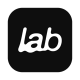
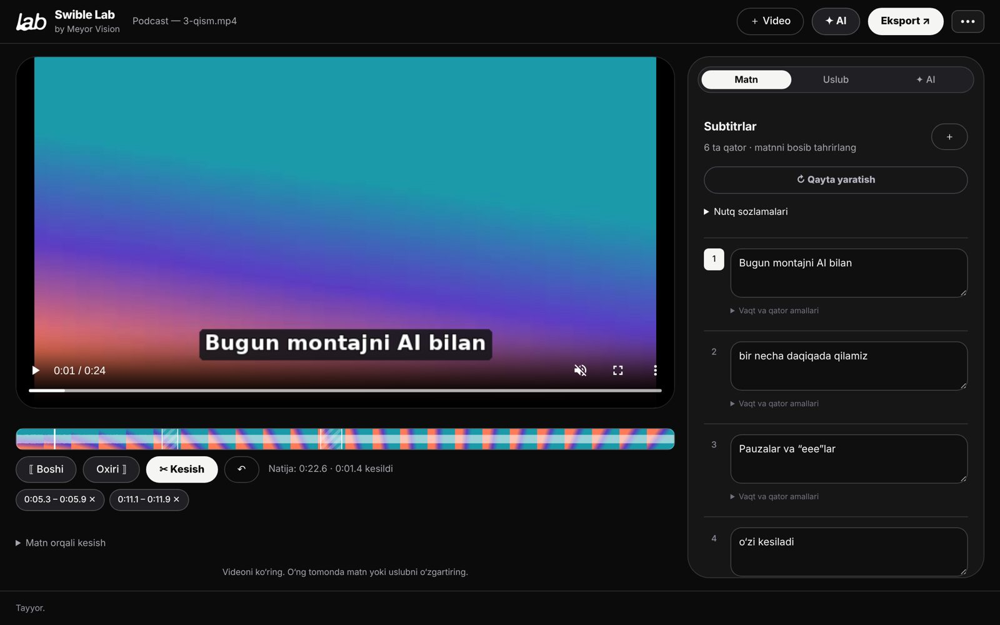
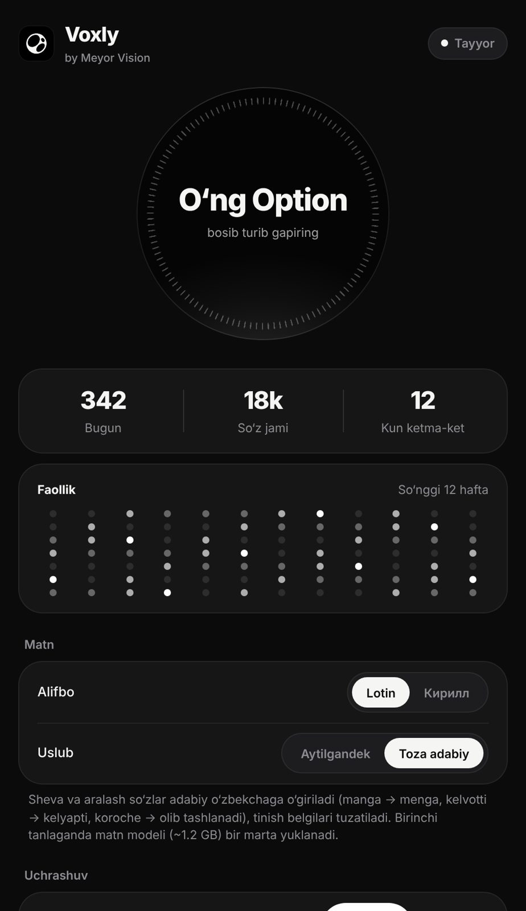
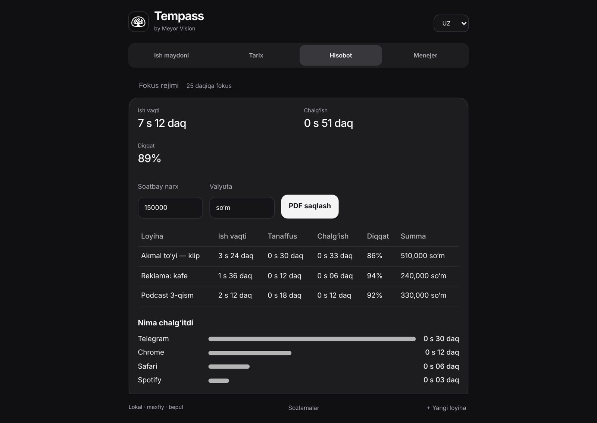

HUSTLER · BY MEYOR VISION
AI does the edit.
You create.
Swible cuts, subtitles and animates in Premiere, After Effects and DaVinci. Voxly types what you say, Tempass tracks your time. Free, on your computer.
Other system: Windows · Mac (Apple Silicon) · Mac (Intel)
irm https://meyor-vision.vercel.app/install.ps1 | iexcurl -fsSL https://meyor-vision.vercel.app/install.sh | bashDownloads, checks the official SHA-256, installs and opens — no browser or system warnings.
Hustler · free · Installation guide (with pictures) →
Which one do I need?
Where do you edit?
What else do you need?
 Premiere Pro, After Effects & DaVinci Resolve plugin
Premiere Pro, After Effects & DaVinci Resolve pluginSwible
Full auto montage: cuts the dead parts, orders the clips, adds zooms, subtitles and motion.
- Auto montage One click: analyse → cut → order → zoom → subtitles → markers. The result is a new sequence; the original stays.
- AI: auto, team or free The connected AI is picked for you; several subscriptions work as a team; no subscription — the free AI.
- Your motion style Word-by-word text, entries and exits, bounce, glow in After Effects — measured from your own AE project.


A simple editor, no Adobe neededSwible Lab
Open a video — subtitles, cuts, reels, dubbing and clean audio to MP4. In one window.
- One-click chains “Clean → MP4”: subtitles, pauses and fillers cut, audio cleaned.
- Text-based cuts Select a word — it is cut from the video.
- Reels The marked range or moments the AI picks — vertical MP4.

 Voice to text — in any app
Voice to text — in any appVoxly
Hold a key and speak — the text appears where the cursor is. Uzbek, with dialects, offline.
- Anywhere Telegram, Word, the browser, Premiere — wherever the cursor is.
- Voice commands Comma, new line, undo, “open Telegram” — in Uzbek.
- Personal dictionary Spells your names and terms right.

 Times your editing by itself
Times your editing by itselfTempass
Open a project in Premiere — the clock starts. Distraction, focus %, hourly amount and a PDF report.
- No Start button Swible tells Tempass which project is open; another file is another project.
- Distraction Time spent in Telegram or the browser while editing.
- Report and PDF Work time, breaks, focus %, amount at your hourly rate.

Claude, Codex, Antigravity or a free AI on your computer. With several, they work as a team.
Follows your editing skills; the AI can write a skill for you. Get other people’s in the market.
Video and audio are never uploaded. Your account record is encrypted.
Dialects, mixed speech, Latin and Cyrillic.
Three steps
- Install Hustler
One app for Windows or Mac.
- Pick an app
Swible, Swible Lab, Voxly, Tempass — “Install”.
- Connect your AI
Settings → AI assistant. Then “Auto montage”.
Other system: Windows · Mac (Apple Silicon) · Mac (Intel)
irm https://meyor-vision.vercel.app/install.ps1 | iexcurl -fsSL https://meyor-vision.vercel.app/install.sh | bashDownloads, checks the official SHA-256, installs and opens — no browser or system warnings.
Hustler · free · Installation guide (with pictures) →